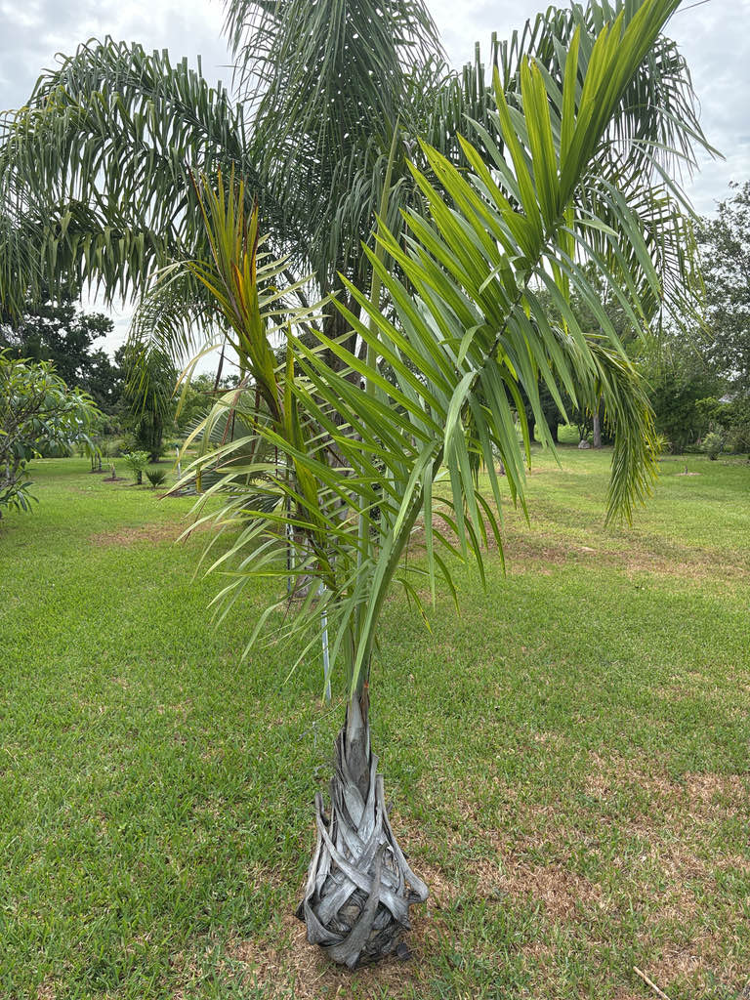

- That ghostly white crownshaft is not fully white at first. Young plants wear a shaggy reddish-brown coat; the bright waxy white develops gradually as the palm matures — so what you see today may look quite different from what it looked like ten years ago.
- This palm spent decades in botany under an entirely different genus name, Veillonia, honoring a French botanist who helped collect the original specimens. It was reclassified into Cyphophoenix only in 2008, when a Kew Bulletin revision reorganized New Caledonian palms based on structural details most of us would never notice.
- In the wild, the entire known population grows on a single mountain massif — Mont Panié in northeastern New Caledonia, one of the most species-dense patches of forest in the Pacific. The palm has never been found anywhere else on Earth.
- It is extraordinarily slow. Reports suggest this palm can take around 25 years to reach full maturity — which puts any specimen you see here in a very different category from most garden plants.
Cyphophoenix alba is endemic to the island of Grande Terre in New Caledonia, a French territory in the southwest Pacific roughly 750 miles east of Australia. Its entire wild range is confined to the Mont Panié massif in the island's northeastern corner — a mountain whose forests harbor 55 plant species found nowhere else on the planet.
The palm grows in moist rainforest on gneissic and schistose soils, generally between about 650 and 2,000 feet in elevation.
It came to cultivation strictly through the interest of specialist palm collectors and botanical gardens, not the mainstream nursery trade. Seeds are seldom available and the plant grows very slowly, which keeps it genuinely rare even in collections that seek it out. Any specimen you encounter outside New Caledonia represents real horticultural patience.
- The crownshaft — the smooth, tubular column formed by the overlapping bases of the leaves just below the crown — is what makes this palm unmistakable. It is covered in a shiny white wax that contrasts sharply with reddish-brown, felt-like scales, especially toward the petioles.
- The upper trunk develops a similar whitish waxy coating, while the lower trunk stays gray-brown and is marked by prominent, evenly spaced rings left by fallen leaves.
- The inflorescence emerges below the crownshaft rather than within it — a characteristic of crownshaft palms generally. In bud it is entirely coated in white wax; as it matures it arches outward and becomes pendulous. The flowers are unisexual but borne on the same plant (monoecious), so a single specimen can set fruit.
- The brown, ellipsoid fruits are distinctive even among New Caledonian palms: their outer surface is minutely bumpy — papillate — a detail that helps separate this species from its closest relative, Burretiokentia.
- New Caledonia itself is a recognized global biodiversity hotspot, and Mont Panié is its most species-dense corner. The mountain's forests are home to 13 species of palms, and the entire genus Cyphophoenix — four species in all — is endemic to New Caledonia and found nowhere else on Earth.
- Habitat loss from mining and land clearance, which has eliminated roughly 70 percent of the island's original vegetation cover, makes wild populations of palms like this one increasingly vulnerable.
In its native New Caledonian rainforest, palm fruits are important food resources for fruit-eating birds and bats, including the endemic New Caledonian Imperial Pigeon and flying foxes, which serve as key seed dispersers in these forests. The inflorescences of palms in this habitat are typically visited by insects attracted to pollen and any accessible floral resources.
In Florida cultivation this palm provides essentially no documented wildlife food value — it is too rare and slow-growing to function as a meaningful resource for local fauna. Its primary value here is as a living example of one of the world's most geographically restricted palm species.
Inflorescence is infrafoliar — it emerges from the trunk below the crownshaft, not from within it. Branched to one or two orders, initially erect in bud and coated in white wax, becoming arched and pendulous as it matures. The plant is monoecious: male and female flowers are borne on the same inflorescence, so a single palm can produce fruit.
Brown, ellipsoid, with a notably thick, carved endocarp. The outer surface is minutely papillate — tiny bumps visible up close — which is unusual among New Caledonian palms and a reliable distinguishing feature. Fruits are borne on the arching, pendulous fruiting branches below the crownshaft.
Solitary trunk, ringed by prominent leaf scars at roughly 4 inches intervals; slightly flared at the base and sometimes producing a mass of exposed roots there. Lower trunk is green to gray-brown; upper trunk develops a whitish waxy coating. The crownshaft, about 4 feet long, is covered in shiny white wax merging into reddish-brown felt-like scales toward the leaf bases.
Pinnate, up to roughly 10 feet long on petioles to about 2 feet. Roughly 45 leaflets per side, held horizontally, each stiff and acuminate with a prominent midrib; green above, with brownish scales on the midrib and lateral ribs below. The overall crown is upright with arching fronds.
Reproduced by seed. Seeds are reported to germinate reasonably well, but subsequent growth is extremely slow — the plant may take 25 years or more to reach full maturity. Seeds are seldom available commercially, making this palm very difficult to obtain even through specialist channels.
Start at the top: the crownshaft stops you first — a waxy, whitish-gray column trimmed in reddish-brown fuzz where the leaf bases begin, glowing faintly against the dark green fronds. Scan down the trunk and you will see clean, evenly spaced rings all the way to the slightly swollen base.
Look below the crown for any arching, pendulous flower or fruit clusters — they emerge from the trunk beneath the crownshaft rather than from within it. Up close, check the ellipsoid brown fruits for their minutely bumpy surface texture, which feels almost like fine sandpaper.
No toxicity is documented for Cyphophoenix alba in people, dogs, or other animals. The trunk and leaf bases carry sharp-edged fibrous scales that can scratch if handled roughly, so a light touch is worthwhile around the crownshaft area — otherwise this is a harmless ornamental palm that people simply do not eat.
The genus name Cyphophoenix translates roughly as 'humped palm,' likely a reference to the shape of the fruit or seed. The species epithet alba is Latin for white, taken directly from the characteristic white wax that covers the crownshaft, upper trunk, and inflorescence bracts.
C. alba was formally moved from the monotypic genus Veillonia into Cyphophoenix by Pintaud and W. J. Baker in a 2008 revision of New Caledonian palm genera published in Kew Bulletin. The former genus name honored botanist Jean-Marie Veillon of O.R.S.T.O.M. in Nouméa, who co-collected the type specimen.


- © Randall Carter (CC-BY-NC), via iNaturalist